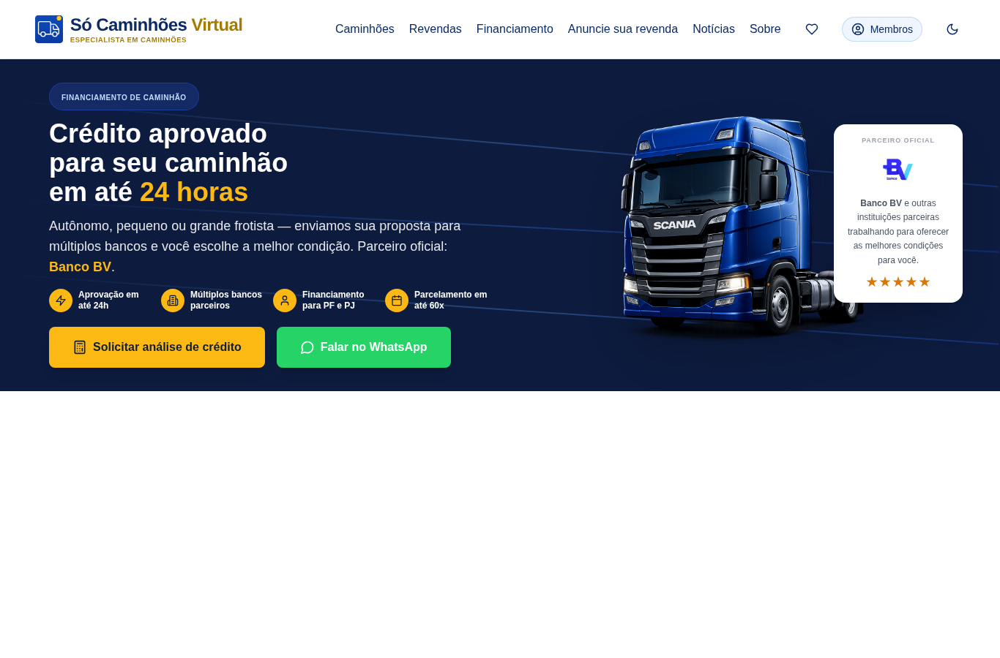
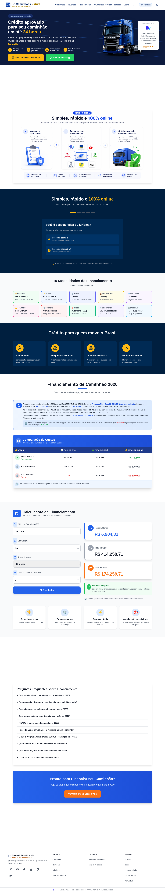

Sistema de Investigação de Marca e Identidade Online
https://www.socaminhoesvirtual.com.br/financiamento-caminhao
Prioridade: MEDIUM · Cenário: B_AMBIGUOUS_COMMUNICATION · Revisão humana: PENDING
O estabelecimento auditado é um correspondente bancário legítimo e cadastrado (SO CAMINHOES VIRTUAL LTDA), atuando na intermediação de financiamentos de veículos pesados. Apesar de manter identidade comercial própria e atuar em ambiente multibancos, utiliza a marca e o logotipo oficial do Banco BV com a chancela de 'Parceiro Oficial' sem incluir os avisos regulatórios obrigatórios de correspondente bancário e canais de ouvidoria exigidos pela Resolução CMN nº 4.935/2021. Trata-se de comunicação ambígua que requer adequação formal de conformidade. [Revisor: CONFIRM] A página pertence a uma plataforma/revenda especializada em veículos pesados (SO CAMINHOES VIRTUAL LTDA, CNPJ 63.755.991/0001-32), confirmada como correspondente bancário autorizado no cadastro da instituição. Embora mantenha sua marca própria visível e apresente contexto de intermediação de financiamento multibancos, utiliza a marca e logotipo do Banco BV com a chancela de 'Parceiro Oficial' em destaque sem exibir a declaração formal de correspondente bancário nem os dados de contato de ouvidoria da instituição contratante, descumprindo os deveres de transparência da Resolução CMN nº 4.935/2021. Mantém-se REVIEW_REQUIRED para adequação regulatória.


| Ref | Tipo | Local | Conteúdo |
|---|---|---|---|
| E-URL | domain | url | URL final: https://www.socaminhoesvirtual.com.br/financiamento-caminhao (domínio: www.socaminhoesvirtual.com.br) |
| E-DISC-001 | text | search_index | Índice de busca (grounding): socaminhoesvirtual.com.br — **Como utiliza a marca:** Divulga tabelas de taxas e prazos de Crédito Direto ao Consumidor (CDC Caminhão e Veículos Pesados), chancelando as ofertas sob o título de *parceiro oficial* para captação via WhatsApp e formulários |
| E-SHOT-VIEWPORT | screenshot | viewport | evidence/C8374818baf/attempt-1/viewport.png (sha256 61c3b5ced87f1a06…) |
| E-SHOT-FULL | screenshot | page | evidence/C8374818baf/attempt-1/fullpage.png (sha256 f426a690cdf6b038…) |
| E-TITLE | title | head | Financiamento de caminhão 2026: taxas e simulação |
| E-META-1 | meta | head | description: Compare taxas de financiamento de caminhão em 2026, veja bancos, entrada, prazo e simule as parcelas. Guia para autônomo, MEI e frota. |
| E-META-2 | meta | head | og:title: Financiamento de caminhão 2026: taxas e simulação |
| E-META-3 | meta | head | og:description: Compare taxas de financiamento de caminhão em 2026, veja bancos, entrada, prazo e simule as parcelas. Guia para autônomo, MEI e frota. |
| E-META-4 | meta | head | author: Só Caminhões Virtual |
| E-CANONICAL | meta | head | https://www.socaminhoesvirtual.com.br/financiamento-caminhao |
| E-HEAD-1 | heading | page | Crédito aprovado para seu caminhão em até 24 horas |
| E-HEAD-2 | heading | page | Simples, rápido e 100% online |
| E-HEAD-3 | heading | page | Você é pessoa física ou jurídica? |
| E-HEAD-4 | heading | page | 10 Modalidades de Financiamento |
| E-HEAD-5 | heading | page | Move Brasil 2 |
| E-HEAD-6 | heading | page | CDC Banco BV |
| E-HEAD-7 | heading | page | FINAME |
| E-HEAD-8 | heading | page | Leasing |
| E-HEAD-9 | heading | page | Consórcio |
| E-HEAD-10 | heading | page | Sem Entrada |
| E-HEAD-11 | heading | page | Com Restrição |
| E-HEAD-12 | heading | page | Autônomo (TAC) |
| E-HEAD-13 | heading | page | MEI Transportador |
| E-HEAD-14 | heading | page | PJ — Empresas |
| E-HEAD-15 | heading | page | Crédito para quem move o Brasil |
| E-HDR | text | header | Caminhões Revendas Financiamento Anuncie sua revenda Notícias Sobre Membros |
| E-FOLD | text | viewport (acima da dobra) | Caminhões Revendas Financiamento Anuncie sua revenda Notícias Sobre Membros Crédito aprovado para seu caminhão em até 24 horas FINANCIAMENTO DE CAMINHÃO Crédito aprovado para seu caminhão em até 24 horas Autônomo, pequeno ou grande frotista — enviamos sua proposta para múltiplos bancos e você escolhe a melhor condição. Parceiro oficial: Banco BV . Aprovação em até 24h Múltiplos bancos parceiros Financiamento para PF e PJ Parcelamento em até 60x Solicitar análise de crédito Falar no WhatsApp PARCEIRO OFICIAL Banco BV e outras instituições parceiras trabalhando para oferecer as melhores condições para você. ★ ★ ★ ★ ★ |
| E-FTR | text | footer | Só Caminhões Virtual® ESPECIALISTA EM CAMINHÕES contato@socaminhoesvirtual.com.br Goianira, GO Seg–Sex 8h–18h COMPRAR Caminhões Revendas Tabela FIPE IPVA de caminhão ANUNCIAR Anuncie sua revenda Área de membros EMPRESA Notícias Sobre Contato e ajuda Termos de uso Privacidade Só Caminhões Virtual® · 2026 SO CAMINHOES VIRTUAL LTDA · CNPJ 63.755.991/0001-32 |
| E-NAV | nav | header | Só Caminhões Virtual, página inicial <https://www.socaminhoesvirtual.com.br/> | Caminhões <https://www.socaminhoesvirtual.com.br/catalogo> | Revendas <https://www.socaminhoesvirtual.com.br/revendedores> | Financiamento <https://www.socaminhoesvirtual.com.br/financiamento-caminhao> | Anuncie sua revenda <https://www.socaminhoesvirtual.com.br/seja-um-revendedor> | Notícias <https://www.socaminhoesvirtual.com.br/noticias> | Sobre <https://www.socaminhoesvirtual.com.br/sobre> | Favoritos <https://www.socaminhoesvirtual.com.br/favoritos> | Membros <https://www.socaminhoesvirtual.com.br/members/login> |
| E-CTA-1 | cta | header | Ativar modo escuro |
| E-CTA-2 | cta | page | Solicitar análise de crédito |
| E-CTA-3 | cta | page | Pessoa Física (PF) Para autônomos e motoristas |
| E-CTA-4 | cta | page | Pessoa Jurídica (PJ) Para empresas e frotistas |
| E-CTA-5 | cta | page | Recalcular |
| E-CTA-6 | cta | page | Ver Caminhões Disponíveis |
| E-CONTACT-1 | contact | page | Falar no WhatsApp <https://wa.me/5562999467920?text=Ol%C3%A1!%20Gostaria%20de%20informa%C3%A7%C3%B5es%20sobre%20financiamento%20de%20caminh%C3%A3o> |
| E-CONTACT-2 | contact | page | Falar no WhatsApp <https://wa.me/5562999467920?text=Ol%C3%A1!%20Gostaria%20de%20informa%C3%A7%C3%B5es%20sobre%20financiamento%20de%20caminh%C3%A3o> |
| E-CONTACT-3 | contact | footer | Instagram <https://www.instagram.com/socaminhoesvirtual/> |
| E-CONTACT-4 | contact | footer | Facebook <https://www.facebook.com/profile.php?id=61580979255643> |
| E-IMG-1 | image | page (acima da dobra) | imagem alt='Banco BV' src=https://www.socaminhoesvirtual.com.br/LOGOBV-v2.webp (80x53, acima da dobra) |
| E-IMG-2 | image | footer | imagem alt='Banco BV' src=https://www.socaminhoesvirtual.com.br/LOGOBV-footer.webp (24x16, abaixo da dobra) |
| E-TXT-001 | text | page | Autônomo, pequeno ou grande frotista — enviamos sua proposta para múltiplos bancos e você escolhe a melhor condição. Parceiro oficial: Banco BV. |
| E-TXT-002 | text | page | Múltiplos bancos parceiros |
| E-TXT-003 | text | page | Falar no WhatsApp |
| E-TXT-004 | text | page | PARCEIRO OFICIAL |
| E-TXT-005 | text | page | Banco BV e outras instituições parceiras trabalhando para oferecer as melhores condições para você. |
| E-TXT-006 | text | page | CDC Banco BV |
| E-TXT-007 | text | page | 1,14% a.m. | Parceiro Oficial |
| E-TXT-008 | text | page | FIPE | Banco 100% | Garantia |
| E-TXT-009 | text | page | Pan | Omni | BV | Lei 14.181 |
| E-TXT-010 | text | page | Atendimento especializado para operações maiores. |
| E-TXT-011 | text | page | Financiar um caminhão no Brasil em 2026 está MAIS ACESSÍVEL DO QUE NUNCA com o Programa Move Brasil 2 (BNDES Renovação de Frota), lançado em 30/04/2026 com R$ 21,2 bilhões em crédito e juros de apenas 11,3% ao ano — muito abaixo dos 28% cobrados pelos bancos convencionais. |
| E-TXT-012 | text | page | As 10 modalidades disponíveis são: Move Brasil 2 (taxa 11,3%, prazo até 120 meses), CDC Banco BV (parceiro oficial, 1,14% a.m.), FINAME, Leasing (PJ Lucro Real), Consórcio (sem juros), Sem Entrada, Com Restrição, e modalidades específicas para Autônomos, MEI e PJ. |
| E-TXT-013 | text | page | As taxas podem variar conforme o perfil do cliente, instituição financeira e análise de crédito. |
| E-TXT-014 | text | page | Atendimento especializado |
| E-TXT-015 | text | page | Qual o melhor banco para financiar caminhão em 2026? |
| E-TXT-016 | text | page | SO CAMINHOES VIRTUAL LTDA · CNPJ 63.755.991/0001-32 |
| Dimensão | Sinal | Achado | Refs |
|---|---|---|---|
| DECLARED_COMMERCIAL_IDENTITY | LEGITIMATE | Identidade corporativa própria claramente exposta no cabeçalho e rodapé (Só Caminhões Virtual, CNPJ 63.755.991/0001-32), validada como correspondente na base de COBANs do banco. | E-HDR E-FTR E-TXT-016 |
| VISUAL_IDENTITY | NEUTRAL | A identidade visual dominante é a da própria plataforma de caminhões; a marca BV é utilizada em cartões de apoio e tabelas de modalidades. | E-SHOT-VIEWPORT E-SHOT-FULL |
| LOGO_USAGE | NEUTRAL | Emprego da versão moderna e atualizada do logotipo do Banco BV em destaque no card de parceiro e no infográfico de bancos parceiros. | E-IMG-1 E-IMG-2 E-SHOT-VIEWPORT |
| CORRESPONDENT_TRANSPARENCY | CONFUSION | Inexistência da cláusula/declaração padrão obrigatória de correspondente bancário e falta de menção ao canal de ouvidoria do Banco BV. | E-SHOT-FULL E-FTR |
| INSTITUTIONAL_LANGUAGE | CONFUSION | Terminologia comercial 'Parceiro oficial' e 'CDC Banco BV' usada em destaque sem o respaldo regulatório expresso da Res. CMN 4.935/2021. | E-TXT-001 E-TXT-004 E-TXT-006 |
O estabelecimento auditado é um correspondente bancário legítimo e cadastrado (SO CAMINHOES VIRTUAL LTDA), atuando na intermediação de financiamentos de veículos pesados. Apesar de manter identidade comercial própria e atuar em ambiente multibancos, utiliza a marca e o logotipo oficial do Banco BV com a chancela de 'Parceiro Oficial' sem incluir os avisos regulatórios obrigatórios de correspondente bancário e canais de ouvidoria exigidos pela Resolução CMN nº 4.935/2021. Trata-se de comunicação ambígua que requer adequação formal de conformidade.
CNPJ 63.755.991/0001-32 observado na página consta do cadastro autorizado 'coban_registry_bv.csv (ref. 2026-10-06)'.
| Tipo | Valor | Ref | Contexto |
|---|---|---|---|
| domain | socaminhoesvirtual.com.br | E-URL | |
| cnpj | 63.755.991/0001-32 | E-FTR | Notícias Sobre Contato e ajuda Termos de uso Privacidade Só Caminhões Virtual® · 2026 SO CAMINHOES VIRTUAL LTDA · CNPJ 63.755.991/0001-32 |
| cnpj | 61.580.979/2556-43 (dígito inválido) | E-CONTACT-4 | Facebook <https://www.facebook.com/profile.php?id=61580979255643 |
| legal_name | 2026 SO CAMINHOES VIRTUAL LTDA | E-FTR | |
| contato@socaminhoesvirtual.com.br | E-FTR | ||
| social_profile | https://www.instagram.com/socaminhoesvirtual/ | E-CONTACT-3 | |
| social_profile | https://www.facebook.com/profile.php?id=61580979255643 | E-CONTACT-4 | |
| legal_name | SO CAMINHOES VIRTUAL LTDA | E-TXT-016 | |
| Índice de busca (grounding): socaminhoesvirtual.com.br — **Como utiliza a marca:** Divulga tabelas de taxas e prazos de Crédito Direto ao Consumidor (CDC Caminhão e Veículos Pesados), chancelando as o | E-DISC-001 | ||
| Falar no WhatsApp <https://wa.me/5562999467920?text=Ol%C3%A1!%20Gostaria%20de%20informa%C3%A7%C3%B5es%20sobre%20financiamento%20de%20caminh%C3%A3o> | E-CONTACT-1 | ||
| partnership_declaration | Parceiro oficial | E-FOLD | Parceiro oficial: Banco BV . |
| partnership_declaration | bancos parceiros | E-FOLD | Aprovação em até 24h Múltiplos bancos parceiros Financiamento para PF e PJ Parcelamento em até 60x Solicitar análise de crédito Falar no WhatsApp PARCEIRO OFICIAL Banco BV e outras instituições parcei |
| partnership_declaration | parceiras | E-FOLD | Aprovação em até 24h Múltiplos bancos parceiros Financiamento para PF e PJ Parcelamento em até 60x Solicitar análise de crédito Falar no WhatsApp PARCEIRO OFICIAL Banco BV e outras instituições parcei |
Mapeamento indicativo para apoio à auditoria. Não constitui conclusão regulatória; a decisão definitiva pertence à auditoria.
Fonte: NORMATIVE
Art. 14. O contrato de correspondente deve estabelecer: [...] II - vedação à utilização, pelo contratado, de logomarca ou de outros atributos que sejam similares aos adotados pela instituição contratante em suas agências, postos de atendimento, sítio eletrônico na internet, aplicativo ou outras plataformas de comunicação em rede;
Evidência observada: —
Fonte: NORMATIVE
Art. 14. O contrato de correspondente deve estabelecer: [...] III - divulgação ao público, pelo contratado, de sua condição de prestador de serviços à instituição contratante, identificada pelo nome com que é conhecida no mercado, com descrição dos produtos e serviços oferecidos e canais de contato da instituição contratante, inclusive de sua ouvidoria, em local visível, em destaque e em formato legível, por meio de: a) sítio eletrônico do correspondente na internet, acessível na página inicial; b) aplicativo e outras plataformas de comunicação em rede do correspondente; [...]
Hipótese: Divulgação ao público da condição de prestador de serviços/parceria ausente, insuficiente, ambígua ou sem destaque
Evidência observada: E-FOLD E-FTR E-SHOT-FULL E-TXT-001 E-TXT-004 E-TXT-006 E-TXT-007
Informação faltante:
Fonte: NORMATIVE
Art. 3º O correspondente atua por conta e sob as diretrizes da instituição contratante, que assume inteira responsabilidade pelo atendimento prestado aos clientes e usuários por meio do contratado.
Evidência observada: —
Limitações: requisitos contratuais/internos não fornecidos: mapeamento limitado ao texto normativo
Decisão: CONFIRM → REVIEW_REQUIRED / MEDIUM
A página pertence a uma plataforma/revenda especializada em veículos pesados (SO CAMINHOES VIRTUAL LTDA, CNPJ 63.755.991/0001-32), confirmada como correspondente bancário autorizado no cadastro da instituição. Embora mantenha sua marca própria visível e apresente contexto de intermediação de financiamento multibancos, utiliza a marca e logotipo do Banco BV com a chancela de 'Parceiro Oficial' em destaque sem exibir a declaração formal de correspondente bancário nem os dados de contato de ouvidoria da instituição contratante, descumprindo os deveres de transparência da Resolução CMN nº 4.935/2021. Mantém-se REVIEW_REQUIRED para adequação regulatória.
| Tema | Severidade | Questionamento | Refs |
|---|---|---|---|
| Nenhum questionamento | |||
| Fonte | Consulta / hipótese | URL original | Título / trecho |
|---|---|---|---|
| grounding | Objetivo: Uso de expressões de oficialidade ('parceiro oficial', 'representante', 'correspondente autorizado', 'agência BV').
Execute no Google Search as seguintes consultas (dorks):
- ("parceiro oficial" OR "parceiros autorizados" OR "correspondente autorizado" OR "correspondente bancário autorizado") ("Banco BV" OR "bv financeira") -site:bv.com.br -site:bancobv.com.br -site:bvfinanceira.com.br -site:bvinvestimentos.com.br -site:napista.com.br -site:bvopen.com.br -site:meufinanciamentosolar.com.br -site:votorantim.com.br -site:vam.com.br -site:reclameaqui.com.br -site:jusbrasil.com.br -site:jus.br
- ("representante" OR "agência BV" OR "agência Banco BV" OR "canal oficial" OR "site oficial") ("Banco BV" OR "bv financeira") financiamento -site:bv.com.br -site:bancobv.com.br -site:bvfinanceira.com.br -site:bvinvestimentos.com.br -site:napista.com.br -site:bvopen.com.br -site:meufinanciamentosolar.com.br -site:votorantim.com.br -site:vam.com.br -site:reclameaqui.com.br -site:jusbrasil.com.br -site:jus.br
Liste de forma abrangente as páginas públicas encontradas (até 12 resultados distintos), informando para cada uma o nome do estabelecimento/perfil, a URL e como a marca é utilizada (destaque visual, título, feirão, simulador, redes sociais e se há ou não identificação clara de CNPJ e condição de correspondente bancário). H4-official-language | https://www.socaminhoesvirtual.com.br/financiamento-caminhao | socaminhoesvirtual.com.br **Como utiliza a marca:** Divulga tabelas de taxas e prazos de Crédito Direto ao Consumidor (CDC Caminhão e Veículos Pesados), chancelando as ofertas sob o título de *parceiro oficial* para captação via WhatsApp e formulários |
Original: https://www.socaminhoesvirtual.com.br/financiamento-caminhao
Final: https://www.socaminhoesvirtual.com.br/financiamento-caminhao
| Artefato | Caminho | SHA-256 | Bytes |
|---|---|---|---|
| screenshot_viewport | evidence/C8374818baf/attempt-1/viewport.png | 61c3b5ced87f1a06528dc465fc43d3444e62c7b771c9c7828f357d5a5f3b1c70 | 239093 |
| screenshot_full | evidence/C8374818baf/attempt-1/fullpage.png | f426a690cdf6b038ddfc6a097b1f2da34bc90ea7bde8cbcc2b03a818c8d2c6ce | 1359081 |
| html | evidence/C8374818baf/attempt-1/page.html.txt | 7d7b0e9dffb3356ad84cb9bf85378b97c81a4db0703b1e65f3f39f024ca6f75e | 105209 |
| text | evidence/C8374818baf/attempt-1/text.txt | 9b0185218dfa64477e8868f77f64fae060e1137793d0a0a7ad742df7f17c5046 | 5333 |
| page_data | evidence/C8374818baf/attempt-1/page.json | 331a4d94d3bb4e907cfd4871fd308e2777f4d7334e2fb4528adcc087e1b66277 | 18670 |
| Quando | De | Para | Nota |
|---|---|---|---|
| 2026-11-25T18:12:13+00:00 | DISCOVERED | QUEUED | prioritised (score 0.0) |
| 2026-11-25T19:42:09+00:00 | QUEUED | COLLECTING | |
| 2026-11-25T19:42:16+00:00 | COLLECTING | COLLECTED | |
| 2026-11-25T19:42:16+00:00 | COLLECTED | ANALYZING | |
| 2026-11-25T19:42:37+00:00 | ANALYZING | REVIEWING | |
| 2026-11-25T19:42:46+00:00 | REVIEWING | COMPLETED |